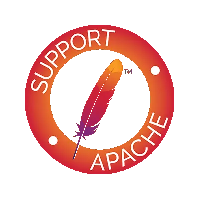

Infraestructura per al desplegament d'aplicacions web
1. Introducció
La implantació web és el procés de preparar, configurar i posar en funcionament una aplicació o servei web en un servidor accessible a través d’Internet o d’una xarxa local.
Combina coneixements de xarxes, sistemes operatius, seguretat i programació web, amb l’objectiu de garantir que la web siga estable, escalable i segura.
2. Servidors web

Per tal de desplegar aplicacions web necessitarem almenys un Servidor Web (per a l’allotjament de pàgines web estàtiques).
El servidor web utilitza un sistema operatiu com a base per al seu funcionament. El sistema operatiu que en més del 95% de les ocasions serà un sistema Linux.
Si, se va a servir pàgines dinàmiques, caldrà un programari per a la gestió de les bases de dades (MySQL habitualment), i un llenguatge de programació per gestionar el contingut dinàmic (sol ser PHP).
Existeixen gran quantitat de servidors web diferents, des d’Apache i Nginx, els més coneguts i utilitzats amb més d’un 85% d’ús entre tots dos, fins a altres servidors menys coneguts com Microsoft IIS (si fem servir un servidor Windows), LiteSpeed, Node.js, etc.
Els dos servidors més utilitzats per muntar pàgines web avui dia són Apache i Nginx, però, és impossible dir que un és millor que un altre ja que cadascun té les seves pròpies fortaleses i debilitats i pot millorar millor sota certes circumstàncies o simplement ser més senzill d’utilitzar.
3. Plataformes cloud
| Plataforma cloud | Ventajas | Inconvenientes |
|---|---|---|
| AWS | La más extendida y completa | Tecnologías propias |
| Google Cloud | Más simple y económica | Oferta reducida |
| Windows Azure | Cloud híbrida muy fácil | Utilización complicada |